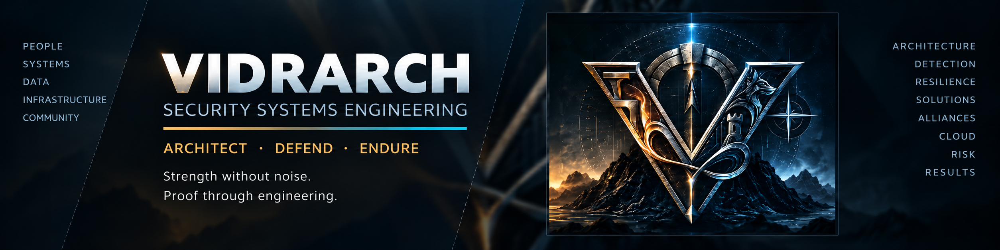

Architect
Translate risk, vendor guidance, and business requirements into scoped security designs with dependencies, ownership, testing, and rollback.

STRENGTH WITHOUT NOISE // PROOF THROUGH ENGINEERING
Enterprise security systems engineering across SIEM, Microsoft security, identity, endpoint, PKI, cloud, network visibility, vulnerability management, and operational resilience.
The goal is not to look like a hacker. The goal is to make the engineering depth visible — to technical leaders, hiring managers, and recruiters — without exposing production defenses.
Case studies are deliberately sanitized: no internal hostnames, IPs, tenant identifiers, credentials, detection coverage gaps, incident evidence, or non-public architecture.
VIDRARCH is the public layer for work that is often invisible: designing security controls, making them deployable, validating that they work, documenting the outcome, and keeping production operations moving.
Translate risk, vendor guidance, and business requirements into scoped security designs with dependencies, ownership, testing, and rollback.
Connect endpoint, identity, SIEM, network, PKI, cloud, and exposure-management controls into a defensible operating model rather than isolated tools.
Build for the reality of enterprise operations: change windows, compatibility, telemetry, supportability, recovery, and evidence that survives scrutiny.
The bars represent the highest type of evidence currently presented in this portfolio: hands-on, operational, engineering, or architecture-level work. They are not self-scored proficiency percentages.
Splunk Enterprise, Splunk Cloud, Enterprise Security, Universal Forwarders, SPL, dashboards, alerting, telemetry validation, platform upgrades, and operational assurance.
Microsoft Defender XDR, Defender for Endpoint, Intune, security baselines, Attack Surface Reduction, BitLocker, Windows Hello, endpoint telemetry, and controlled rollout patterns.
Microsoft Entra ID, SAML, SCIM, enterprise applications, claims, app registrations, Conditional Access, provisioning, certificate trust, and authentication troubleshooting.
Security Onion, Zeek, Suricata, packet-broker concepts, sensor placement, throughput/retention thinking, network telemetry, and segmentation/visibility platforms.
Risk and vulnerability assessment, controlled validation, remediation verification, Nexpose / InsightVM, Metasploit Pro, advisory applicability, and exposure-focused investigation.
Certificate Authority systems, certificate lifecycle, SAML signing trust, renewal/revocation considerations, trust-path troubleshooting, and integration dependencies.
Windows Server, VMware, enterprise storage, service operations, disaster recovery, system administration, production troubleshooting, change control, and recovery planning.
Translate technical findings into implementation plans, change records, operational guidance, risk statements, executive summaries, and cross-team coordination.
These are intentionally written around engineering decisions, validation, and business value. Where a project is not presented as completed, the status is labeled accordingly.
Upgraded and validated a Linux-based Splunk Enterprise system serving Heavy Forwarder and Deployment Server roles, preserving service identity, telemetry, cloud forwarding, and operational health.
Used pilot evidence, package verification, service-state checks, Splunk Cloud telemetry, and explicit go/no-go criteria to convert a point upgrade into a repeatable production runbook.
Security engineering across Defender XDR, Defender for Endpoint, Intune, attack-surface reduction, BitLocker, Windows Hello, telemetry validation, narrow exceptions, and staged deployment.
Enterprise application integration and troubleshooting across Entra ID, SAML, SCIM, claims, certificates, authentication flows, Conditional Access, and identity lifecycle dependencies.
Security Onion / Zeek / Suricata architecture work focused on monitored traffic, packet paths, sensor placement, throughput, retention, packet brokers, telemetry quality, and downstream SIEM value.
Move from scanner finding to defensible remediation by checking applicability, validating exposure, coordinating remediation, and verifying the control outcome with security telemetry.
A repeatable pattern that turns technical work into evidence of ownership.
Establish actual state, scope, dependencies, versions, telemetry, and constraints.
Check vendor guidance, platform support, evidence quality, and assumptions before acting.
Define target state, blast radius, test plan, ownership, exceptions, and rollback.
Use controlled scope to expose production-critical lessons before broad rollout.
Execute with change discipline, package/configuration trust, and operational coordination.
Validate outcome using service health, logs, telemetry, business function, and evidence.
Document, monitor, standardize, hand off, and retain a recovery path.
The security work is backed by years of endpoint, support, systems administration, networking, storage, virtualization, and enterprise operations experience.
Architecture, implementation, and operation across SIEM, endpoint, PKI, cloud/network security, vulnerability assessment, risk analysis, and enterprise security controls.
Windows data servers, VMware, enterprise storage, recovery practices, infrastructure security, and security-agent deployment.
Advanced endpoint diagnostics, enterprise support, hardware/software engineering, proactive maintenance, and executive support.
Tiered troubleshooting, incident resolution, knowledge management, enterprise support, and cross-team coordination.
Hardware, software, local networks, campus wireless/LAN projects, fiber/network hardware, and hands-on technical support.
Security systems engineer with 25+ years of professional IT experience and a progression from enterprise support and systems administration into cybersecurity. Hands-on across Splunk Enterprise Security, Microsoft Defender XDR, Entra ID, Intune, PKI, Security Onion, vulnerability management, and production security engineering. The differentiator is operational depth: translating security requirements into deployable controls, validating results, documenting evidence, and communicating across technical teams and leadership.
Open to conversations about Security Systems Engineering, Security Engineering, Detection Engineering, and security architecture opportunities.